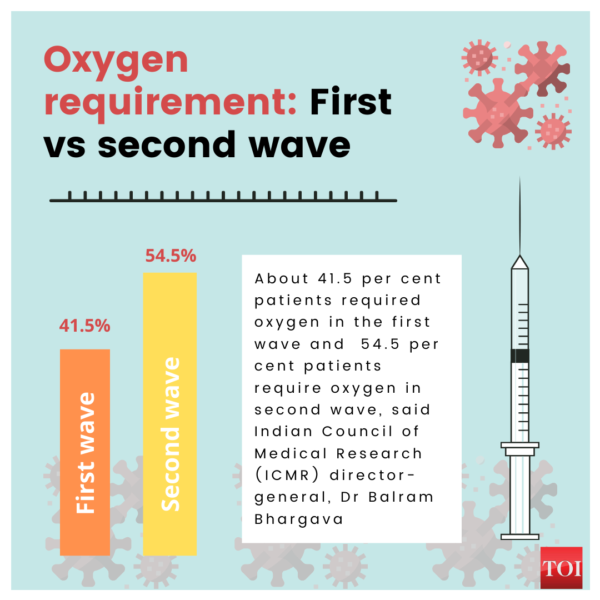

Coronavirus disease-19 (COVID-19), produced by the severe acute respiratory syndrome coronavirus 2 (SARS-CoV-2), has become a global pandemic, giving rise to a serious health threat globally.The second wave of COVID-19 in India has had severe consequences in the form of spiralling cases, reduced supplies of essential treatments, and increased deaths particularly in the young population. Understanding why the second wave has been more dangerous than the first could help to identify the potential areas of diagnostics to target with future control strategies.
Ever since the coronavirus pandemic hit the country the doctors have been working round the clock in order to save the lives of people. In the process, many committed doctors succumbed to the deadly virus, which they contracted during their work. However, this has not impacted the people in the field as they continue to make efforts for treating each person.
Initially, when there was no clarity regarding the treatment of coronavirus, many doctors used their experience and treated patients with medicines used for different diseases to cure them of the virus. In fact, there was a time when the doctors and people working in the hospitals did not even have sufficient personal protective equipment, yet they did not step back from their duty and continued their service for the larger good of the society.During these trying times, many doctors also started providing free online consultation services for those people who were unable to afford the treatment. Many people in this profession also went on to the extent of sharing videos regarding exercises and things that an individual could do if they contracted the virus. Quite a few medical professionals also went to rural parts of India with basic medicines for treating those who did not have any access to any healthcare facilities.
Covid pandemic has made the healthcare system difficult to prepare for the situation. Ever since the second wave of the pandemic started, the healthcare system in India has been teetering on the brink, with many hospitals unable to handle the relentless inflow of patients whilst also running short of beds, oxygen cylinders and other essentials.
As the second wave crashed into 12 states across the country, medical health experts began tracking an aggressive new strain of virus that hit the lungs, almost immediately, on the first day of the infection. Shortness of breath was the defining medical symptom of the second wave.
The EMS department at hospitals, which has a capacity of 5 beds, has been handling over 20 patients, at any given point of time, in the second wave. We are forced to turn away many patients. The first wave of the pandemic pales in comparison.
It is definitely worse than last year. It's not a second wave but it feels like Covid tsunami had begun to loom over the horizon. It feels as people were dropping their guards assuming that the worst was behind them, India was hit by a second wave of the pandemic, the magnitude of which is rendering its already precarious healthcare system more overburdened than ever. India has been reporting over two lakh cases a day in month of April and May, making it one of the worst Covid-affected countries in the world.
Arrowing accounts of overburdened hospitals, people scrambling to secure oxygen supplies and medicines such as Remdesevir and Actemra, morgues piling up with bodies, and funeral pyres flickering away late into the night amid soaring deaths.
The new strain of the virus amid the second wave is more virulent and infectious, which leaves younger and healthy people in critical conditions as compared to before, they are gasping for breathe. And the lung involvement is like really, really high. We are seeing people in the 25-30 age groups dying.
There was shortage of enough doctors or healthcare workers, especially given the spike in coronavirus cases, adding that this is also having repercussions on those patients with other critical illnesses as they face inordinate delays in getting treated.
The shortage of supplies is also definitely a drawback. In the First wave last year we were shortage of PPE and in the second wave working in the hospital, seeing more deaths, seeing the shortage of supplies and the hunt for medications by hospital and patient relatives - all this is definitely something that's creating a horrifying situation for all of us.